268. Missing Number
官方思路:
- gaussian formula
- bit
思路整理：
用高斯求和算出应该有的总合后减去实际有的总合就可以直接得到漏掉的数字。或者使用bit manipulation方法，观察到从缺失的那一位开始index都比实际数字少1，我们可以利用这个性质。先将missing value设置为nums.length。然后遍历nums数组将missing 每次分别和index i以及实际数字 nums[i] 做xor运算。结果是不缺失的数字都是成对出现于是两两相消，最后只剩下未消掉的缺失数字，也就是答案。
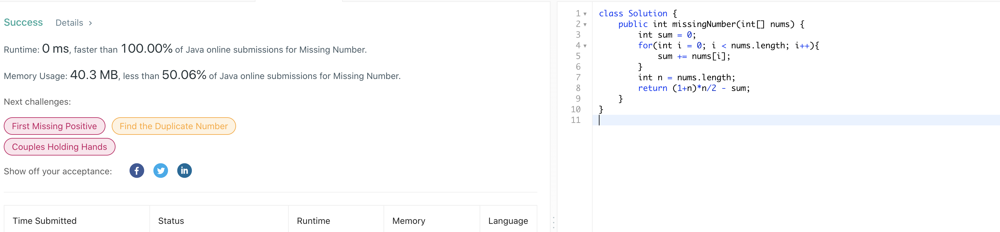270. Closest Binary Search Tree Value
官方思路:
- inorder recursive
- binary search
思路整理：
最先想到inorder recursive，简单暴力，由于没有helper当root为空时返回距离target最远距离，其他情况比较root值，左子树返回值以及右子树返回值（recursive）并返回距离target最近的值即可。并一种更简洁并且充分利用bst性质的方法是binary search，在root节点 不为空时持续向下寻找，每次通过判断当前root值于target大小关系决定向左边还是右边寻找，距离target最近的节点值必然存在于这条路径中，在搜索途中维护一个全局最接近target值，最后作为结果返回即可。
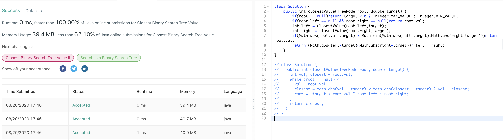271. Encode and Decode Strings
官方思路:
- Chunked Transfer Encoding
思路整理：
思路很有意思一道题，encode所采用的策略是将list中的每个string的长度信息和string本身一起encode进一个string里（注意长度string和substring本身需要用一个非数字字符分隔开方便之后拆分），相对的decode时每次根据一下个要拆分的string长度信息结合indexof方法定位 substring的位置。decode具体做法为设置一个指针初始值为0，在i指针未达到s结尾时进行while循环，每次调用indexof方法直接得到下个分隔字符位置index1（字符前面为位置信息，后面为substring本身）。我们知道从i到index为储存位置信息的字符段，用integer的valueof方法拿到下个substring长度（len）后就可以通过substring index+1到index+1+len直接拿到substring本身。这样一个substring的decode就结束了，将i指针移动到下个substirng长度信息字符串开始位置，即index+1+len即可。
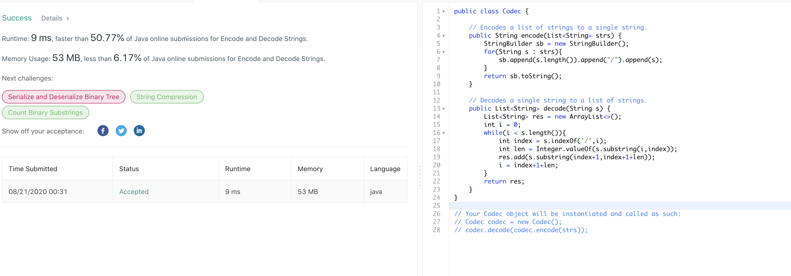274. H-Index
官方思路:
- sort
思路整理：
画图有助于理解此题，题目问的其实就是在x轴index和每个citation值组成的图形中最大的正方形边长。有了这个思路后自然要对数组排序，之后从i等于0进行搜索，当i不越界以及citations[citations.length - 1 - i] > i时向右移动i。最后返回i即可，i即是我们要的index h。
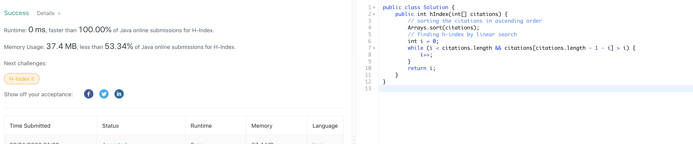275. H-Index II
官方思路:
- binary search
思路整理：
此题沿用了上题核心思路，即寻找数组中出现的第一个满足条件citations[i] >= n - i 的数字，再加上数组有序自然想到二分。具体实现二分很简单见下图，找到后返回数组长度-start即使题目要求的h index。
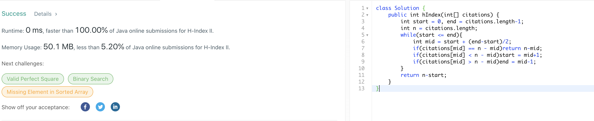276. Paint Fence
官方思路:
- dp
思路整理：
一看就是dp的套路，但想到点上不那么容易，重点是理清思路。观察到对于每个n来说，组成总paint的数量可以拆分成两部分，即最后连个房子是同种颜色和最后两个房子是不同颜色，观察到这点可以使问题大大简化，因为我们可以在dp时将这两个情况分开考虑从而避开出现多于2个相邻房子同种 颜色的情况。先看base case，当n为1时自然有k种方法，n为2也是base case，从这里我们就要将前两个房子相同和不同颜色的情况分开计算了，不同颜色自然是k*（k-1）种，相同则还是k种，比较直接。从第三个房子到第n个房子就是我们dp的范围了。从第三个房子开始，我们每次分别更新 diffCount和sameCount。我们知道，截止到上一个房子，第i-1个房子时paint的总数为 diffCount+sameCount，又知道当前第i个房子和上个颜色不同，那么新diffCount自然为(sameCount + diffCount) * (k-1)。再看sameCount的情况，这里要注意的点是避开出现三个连续同色 的房子，方法很简单，我们不能从之前的sameCount继承任何paint法，因为都将造成三个同色，因此只能从之前diffCount继承，又知道和上个房子同色，因此新的sameCount和旧diffCount数量是相同的。注意到这点就简单了，直接将原diffCount提前保存后负值给新sameCount。到此一轮 dp就更新完毕，接着只要循环即可。最后总的paint数量为截止到第n个房子的sameCount和diffCount数量之和。
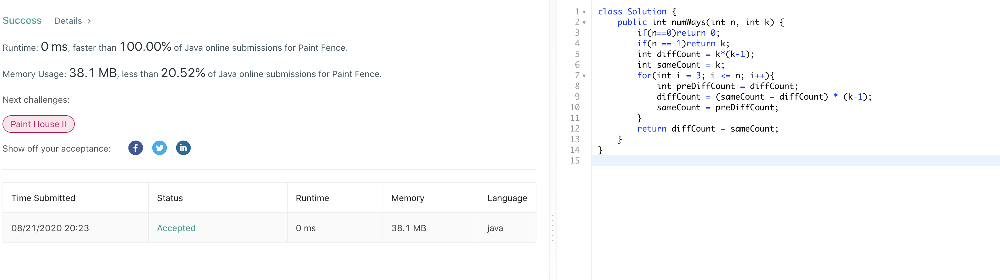277. Find the Celebrity
官方思路:
- Logical Deduction
思路整理：
此题注意到关键逻辑点就不难。注意到每次我们调用knows（int a，int b） api的时候根据celebriy的定义都可以排除a 或者 b其中一个人是celebrity的可能性。我们知道作为celebrity，必须不认识除了自己外的其他人，同时其他人全部认识他。那么每次调用knows进行询问的时候 只有两个可能。第一，a认识b，那么a必然不是celebrity。第二，a不认识b，那么b必然不是celebrity。既然每次调用knows都可以确实排除一个人，我们只需要从第0个人开始（0是初始候选人）到n依次调用knows询问当前候选人和下一个人直接是否认识就一定可以通过一轮遍历将候选人缩小至一个人， 因为题目给出最多一个celebrity（或者没有）。确定这个最终候选人后还没有结束，该候选人未必一定是celebrity，因为我们并没有将所有人两两配对调用knows，所以依然可能该候选人a认识其他人或者有其他人不认识他，只是我们没有对那个组合进行询问。这个也好解决，最后单独对a进行一轮遍历， 检查是否有他不认识的人或者别人不认识他，如果有那么a也不是celebrity，那么只能是不存在celebrity，返回-1.如果通过了检查，那么a确实是celebrity，返回a。
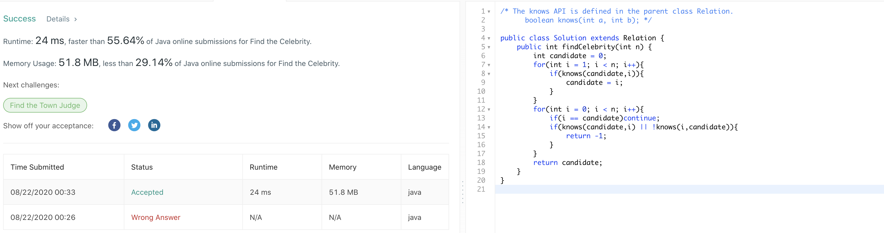278. First Bad Version
官方思路:
- binary search
思路整理：
明显的二分，题目比较简单，按照二分标准套路来就行。
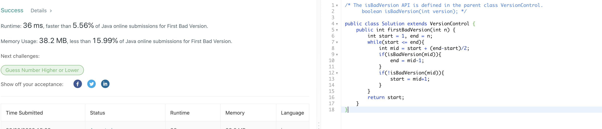279. Perfect Squares
官方思路:
- dp
思路整理：
比较明显的dp，关键在于发现如何从前n-1个位置推导出第n个位置。观察到由于每个数字都是由若干perfect square所组成，那么第n个位置数字一定也是由之前某个位置数字+一个不超过n的perfect square组成，而该perfect square的数量是有限且 确定的，例如12，不超过它的perfect square只有1，4，9三个，那么第12个位置数字必然由位置11数字+1或者位置8数字+1，或者位置3数字+1得来，而我们需要的是找到这若干种情况中最小的数字并把它作为第n位置数字。还是12的例子，位置11数字+1是 4，位置8数字+1为3，位置3数字+1为4，所以位置12数字是3。该dp方法遍历长度为n数组，每次确定第n个位置数字时又从sqrt（n）个候选人中遍历得出最小，因此总复杂度为o（n根号n）。
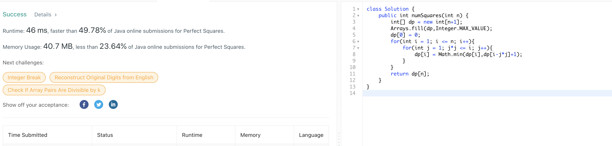280. Wiggle Sort
官方思路:
- one pass
思路整理：
观察到大小关系的顺序为从左至右偶数位上的数字小于等于奇数位上的数字，奇数位上的数字大于等于偶数位上的数字。那么我们从左至右一轮遍历，检查对应位置上的两个数字大小关系是否不符合要求，如果不符合，那么将两个数字互换即可。交换全部完成后原数组必然为 wiggle sort（评论区有严格证明）。时间为o（n），空间为in place。
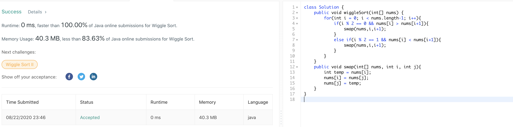281. Zigzag Iterator
官方思路:
- two pointer
思路整理：
首先想到双指针法，两个指针依次在两个数组上遍历，当两个指针有任何一个未达到末尾时说明zigzag iteration未完成，也就是hasnext会return true。next方法我们需要一个boolean 变量flag来标记当前处在哪个数组之中，true表示第一个数组，false表示第二个数组。 当数组数量从2扩展到任何k的时候可以用boolean 变量down 和 up来表示。当两个指针均为达到终点时在两个数组之间zigzag 遍历，每次返回当前指针数字后更改flag为！flag。当有一个数组到达终点时在另一个数组上直接遍历到终点即可。注意两个指针，数组和flag都是全局变量。
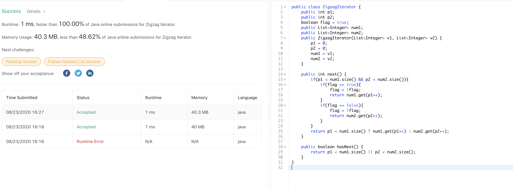283. Move Zeroes
官方思路:
- one pass swap
思路整理：
不改动数组意味着基本就是swap，关键在于怎么swap，题目要求在保持非0数字相对位置不变的前提下将所有0移动到数组末端。我们从头扫描数组，同时设置一个指针j初始值为0，j之前的数字全部不为0，而j之后的不确定。每次从j开始向后找到下一个不为0的数字，将其位置i与j互换后j++。一轮 遍历后所有不为0数字会按顺序被交换到所有0前面且相对位置不变，正满足题目要求。
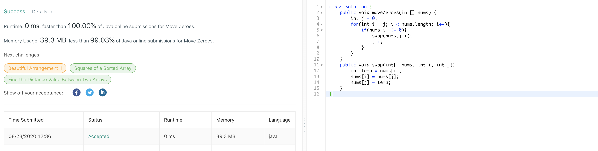284. Peeking Iterator
官方思路:
- cache
思路整理：
我们可以使用cache的技巧将it这个iterator实例的下一个数字存入cache中，在调用peek方法时直接把cache中的值拿出来。constructer中将cache初始化为第一个数字，在next中我们先将当前cache保存，然后根据hasnext判断it有没有下一个元素，有则更新cache值为下一个元素值，没有 cache为null即可，方法最后返回原先cache中的值。hasnext方法直接通过cache是否为null判断判断it有无下一个元素。另外简单点可以直接用queue来实现这个peek方法，构造器将所有元素装进queue，next时poll，peek和hasnext直接使用queue提供的peek和isempty方法也可以达到同样的效果。
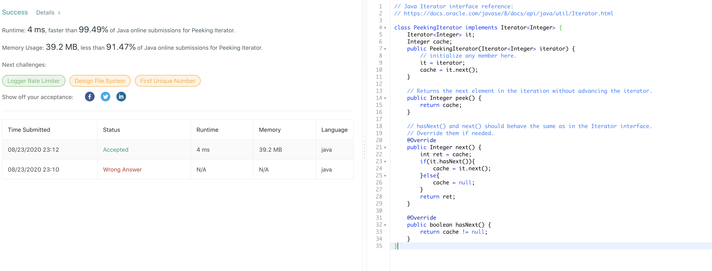285. Inorder Successor in BST
官方思路:
- binary search + updating potential Successor
思路整理：
题目要求找特定节点的successor，既是比p大的节点中最小的。我们可以充分利用bst的性质，从root出发寻找successor，同时设置一个变量succ更新每次更新可能为successor的节点。观察到每次只有两个情况，root比p大，此时root可能为successor，更新succ为当前root，同时下一次寻找应该进入左子树 因为右子树全部大于root，因此右子树中不可能有successor。第二种情况是root小于等于p，此时root不可能是successor无需更新，同时我们只要如果处在successor那么只能在当前root的右子树中，因此进入右子树寻找。最后返回succ指向的节点即可。复杂度最好情况o（logn）最坏情况o（n）。
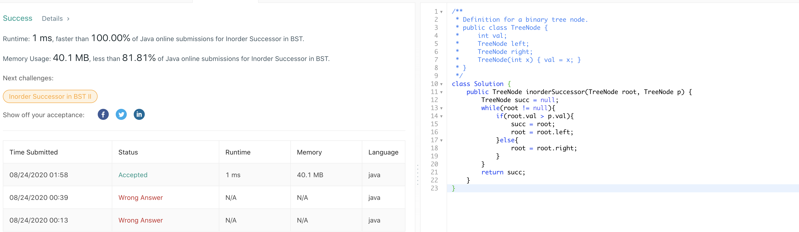286. Walls and Gates
官方思路:
- dfs
- bfs
思路整理：
2d搜索自然有dfs，bfs两种选择，不论哪一种基本思路一致。搜索的出发点为所有的0位置，也就是gate，而不是inf，这样会大大简化问题。先看dfs，从0出发寻找，将当前最短距离存入一个变量d。每次判断上下左右四个位置是否越界或者已经取得过一个比当前0出发最短距离短的距离，这些情况下都意味着搜索结束。 其他情况说明该位置需要更新，更新该位置距离为当前距离+1后进入四个位置递归dfs搜索即可。bfs老办法用queue进行搜索，还是从0出发，先将所有0加入队列作为bfs的第一层后开始bfs搜索，每次拿到当前位置。在判断相邻下一个位置（上下左右）不越界切切还未被搜索过时，更新该位置值并将该位置加入队列即可。由于 bfs的性质，从一次搜索出发只要是更新过的位置必然是距离gate的最短距离。
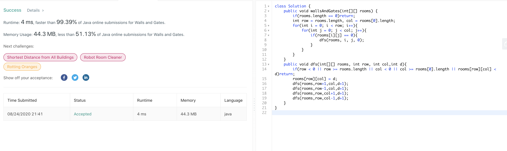 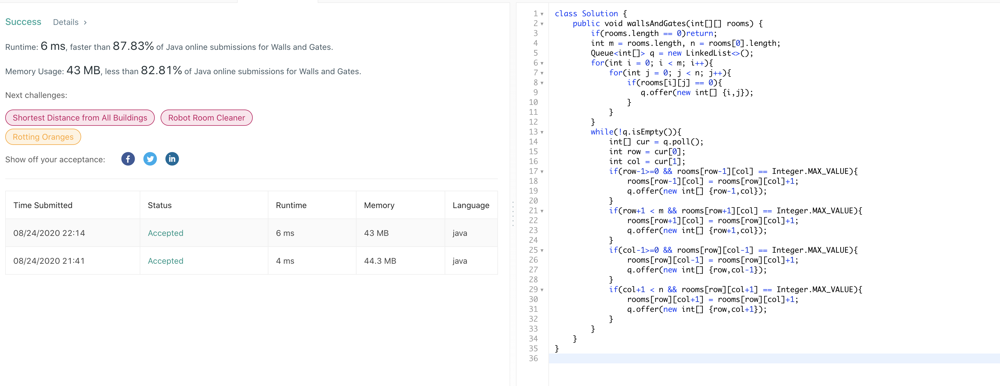287. Find the Duplicate Number
官方思路:
- Floyd's Tortoise and Hare(Cycle Detection)
思路整理：
又是一道可以用龟兔赛跑巧解的题，具体证明和142题非常类似。在这里由于是list，走两步用fast = nums[nums[fast]]表示，走一步用slow = nums[slow]表示，根据龟兔赛跑的原理快慢指针必然会相遇，实际上快慢指针在一个循环中相遇，而循环的起点必然是duplicate的数字，具体证明在142题的图中有说明。当快慢指针 相遇后我们将慢指针移动回开头，再让快慢指针以相同速度前进，那么当他们再次相遇时必然是在循环开始处也就是duplicate数字处，此时返回快慢指针中任意者即可。
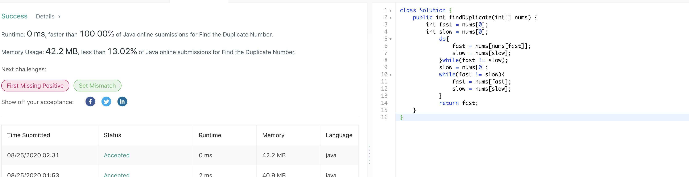288. Unique Word Abbreviation
官方思路:
- hashmap + set
思路整理：
题目说的很绕但其实逻辑很清楚，判断一个word是不是unique有两个标准，先看是否dic中没有单词的abbr和他一样，如果没有则这个word直接是unique的，如果有则进入第二个条件。dic中所有和word的abbr一样的单词是否都是word本身，如果这个条件通过则word也被判定为unique。明确两个条件后思路就明确了，对dic中所有单词 group by abbr，即通过hashmap把所有abbr一样的单词划分为一组（一个hashset）。那么当拿到一个新word时先判断map有没有word的abbr这个key，没有直接true，如果有再判断map中对应该key的set中是否包含word并且大小为1，如果该条件通过也return true。都未通过return false即可。设置辅助方法计算abbr可以让代码简洁，ValidWordAbbr方法中我们根据dict把map搭建好，isUnique方法直接根据已有map做判断即可。
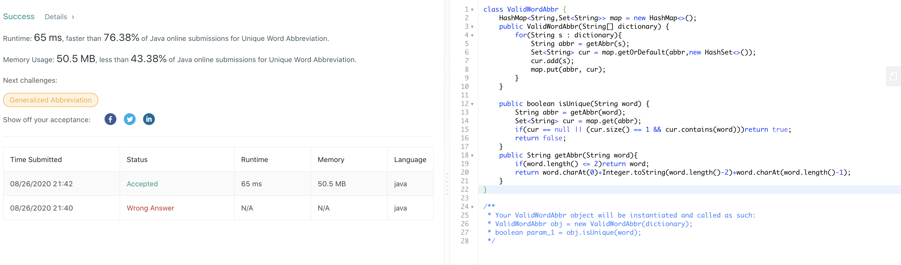